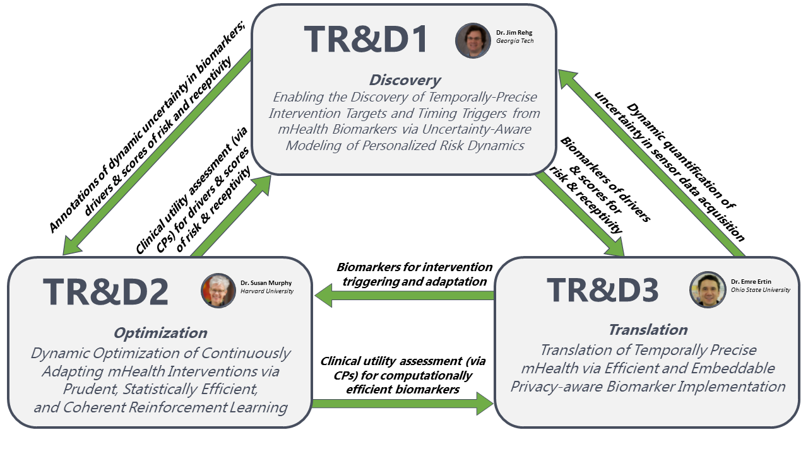
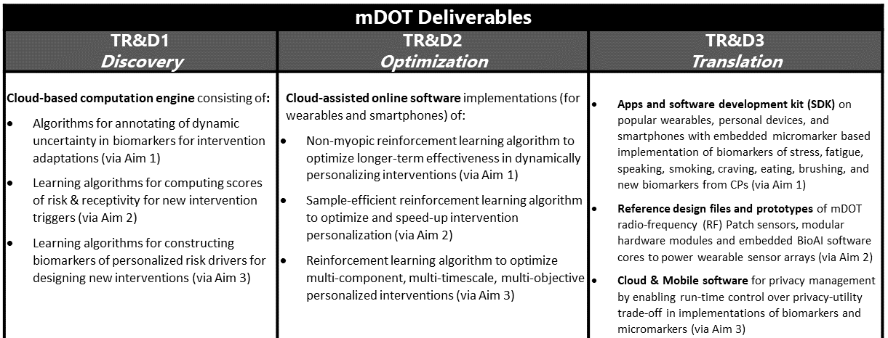

mDOT conducts research and develops a national technological resource to enable the discovery, design, optimization, and deployment of temporally-precise mHealth interventions. Such interventions, when fully integrated into the healthcare ecosystem, can precipitate a much-needed transformation by enabling patients to initiate and sustain the healthy lifestyle choices necessary to prevent and/or successfully manage the burden of multiple chronic conditions. As mHealth broadens to new measures of physiology and as sensors become integrated in implantable devices, mDOT’s reach will eventually expand to more individuals and more health targets, broadening its health, wellness, economic, and societal impact.
Temporally-precise mHealth interventions must be optimized to the moment-to-moment biopsychosocialenvironmental context of each individual for maximum longterm efficacy. To achieve this, we first need to identify the ideal moments (from imperfect digital biomarkers) when the risks are elevated, yet mitigatable. Second, to maximize the chances of success, the intervention content should be optimized to address the key drivers of current risk. TR&D1 (Discovery) addresses both challenges. It develops general purpose computational tools for modeling, representing, and propagating dynamic uncertainty through computation graphs that define mHealth biomarkers. It addresses value uncertainty due to imperfection in machine learning models, temporal uncertainty due to imprecise labels (e.g., self-reports), partial observability (e.g., a smoker wearing a smartwatch switches hands during smoking), and personalized missingness (e.g., due to sensor non-wearing or detachment). Next, TR&D1 develops methods for deriving dynamic risk scores that take into account dynamically varying uncertainty in the constituent digital biomarkers and are personalized to each individual and their external context. Finally, TR&D1 develops methods to model the temporal dynamics of key personalized risk factors that drive the current risk.
The next task in constructing a temporally-precise intervention is to optimize the delivery and content for each individual. This includes finding the optimal timing from candidate times so as to ensure that the individual is receptive and to limit the burden of interruptions from interventions. The decisions regarding the content and timing of an intervention should be closely tied to maximizing the long-term efficacy. TR&D2 (Optimization) addresses these challenges by developing advanced reinforcement learning (RL) methods so that they can be applied to the case of mHealth interventions. In particular, TR&D2 will generalize current myopic Bandit RL methods to enable learning non-myopic decisions rules that account for delayed treatment effects (i.e., limiting intervention fatigue), then develop RL methods that personalize decision rules for every individual by optimally leveraging data across a population or cohort to accelerate learning. Finally, it considers the case of high-need patients who need multiple concurrent interventions. TR&D3 (Translation) develops approaches to use distal health outcomes to coherently guide learning for these multiple components.
The final step in delivering temporally-precise mHealth interventions is efficient implementation on personal devices (i.e., smartphones and wearables). For mHealth interventions to maintain their temporal precision, they must be delivered within the time window when the current risk is elevated and mitigatable, especially for risks that can rise rapidly (e.g., about to smoke). TR&D3 addresses these challenges. It will develop modular micromarker abstractions to compress information relevant to biomarker computations to support scalable, lowlatency, and power-efficient computation of current and emerging biomarkers. To make the next-generation of digital biomarkers from high data rate sensor arrays (e.g., radio-frequency or imaging sensors) usable in mHealth interventions, it will develop dynamically configurable signal processing architectures combining compressive sensing and machine learning algorithms to support local biomarker computations. Finally, it will create computational mechanisms and a general biomarker privacy framework to enable participant control over the collection and sharing of mHealth data for third party research when data cross trust domains.
Synergy
TR&D1 (Discovery) operates synergistically with TR&D3 in developing methods and tools for uncertainty quantification, including the use of micromarkers and metadata from sensors to model the uncertainty in a biomarker. TR&D1 will develop uncertainty-aware risk scoring models that will be used as input by the intervention adaptation methods developed under TR&D2. TR&D1 receives feedback from the application of risk scoring models by TR&D2 to enable an iterative refinement of TR&D1 models and methods.
TR&D2 (Optimization) leverages risk and engagement scores from TR&D1, as implemented by TR&D3 for real-time execution. Also, TR&D2 provides feedback to TR&D3 for development of new biomarkers. TR&D2’s adaptation methods will provide tests of the clinical utility of TR&D1’s methods by closing the loop between the estimation of risk and engagement scores and delivery of interventions.
TR&D3 (Translation) is developing real-time, low power, low-latency and privacy-aware implementations of biomarkers of risk and receptivity developed in TR&D1, and intervention triggering/adaptation prompts identified in TR&D2 so they can be used in making real-time decisions by TR&D2, for the selection, adaptation, and delivery of temporally precise mHealth interventions. Their feedback will be used for iterative refinement.